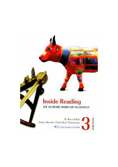

IRAkademik matnlar orqali ingliz tili lug'at boyligini oshiruvchi o'quv qo'llanma.
Ushbu kitob talabalar va o'rganuvchilarga akademik so'z boyligini matnlar kontekstida o'rganishga yordam beradi. Oksford universiteti nashriyoti tomonidan tayyorlangan ushbu qo'llanma o'qish va tushunish ko'nikmalarini rivojlantirish uchun mo'ljallangan.